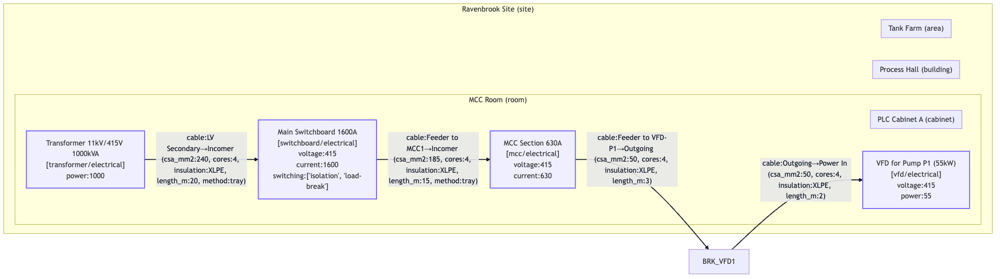
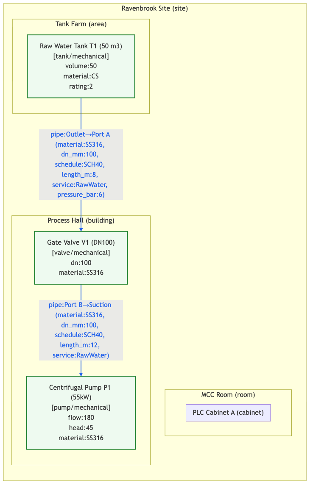
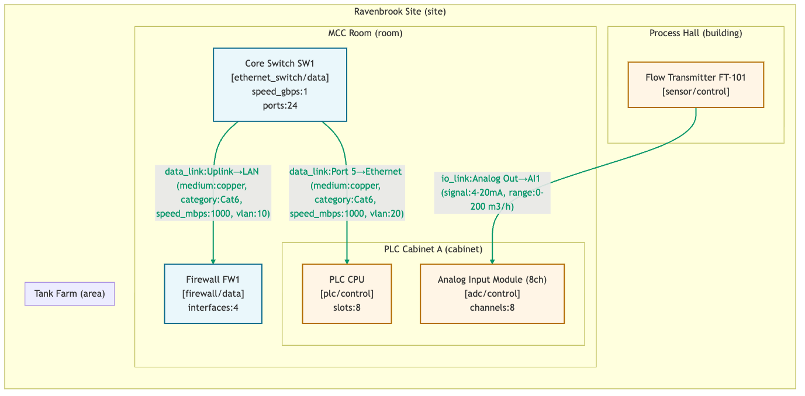
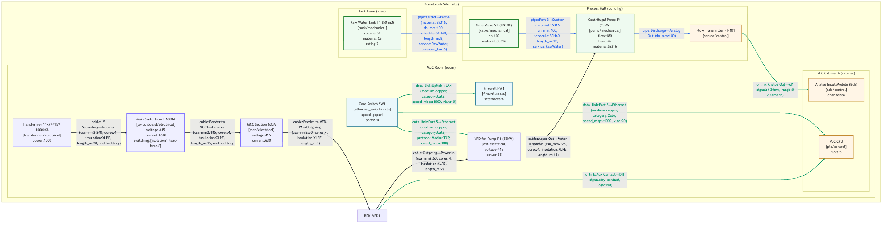

One schema for a plant, across every domain that has to agree about it
Electrical, mechanical, controls and network engineers describe the same building four times, in four tools, and reconcile the results in meetings. IndustroML lets them describe it once. A pump is one object with a power feed, a pipe, an I/O point and a network address, not four separate drawings of a pump.

Four lists, and that's the format
It's text, which is the point: it diffs, it can be reviewed, it validates in CI, and an agent can write it.
Containers
Physical or logical groupings, which nest: site, building, room, skid, cabinet, rack, tray, pipe rack, conduit.
Assets
The equipment, each in one container: transformer, switchboard, pump, heat exchanger, PLC, firewall, gas detector.
Interfaces
The ports on an asset, each with a domain and a medium. Ids are scoped to the asset, such as P1.SUC or PLC1.AI1.
Connections
What joins two interfaces and how it gets there: a cable, pipe, data link or I/O link, with an optional route through named trays and racks.
meta:
format: IndustroML
version: "0.1"
site_name: Ravenbrook Water Plant
containers:
- { id: SITE, type: site }
- { id: BLD-MCC, type: room, parent: SITE }
assets:
- id: MSB1
kind: switchboard
domain: electrical
container: BLD-MCC
attributes: { voltage_v: 415, current_a: 1600 }
interfaces:
- { id: MSB1.FEED-MCC1, asset: MSB1,
domain: electrical, medium: ac_lv_3ph }
connections:
- id: C-MSB1-MCC1
type: cable
from: MSB1.FEED-MCC1
to: MCC1.IN
route: [TRAY-A1, TRAY-A2, RISER-3]
attributes: { csa_mm2: 185, cores: 4,
length_m: 15, method: tray }The field that earns the format
route: [TRAY-A1, TRAY-A2, RISER-3] makes a connection a physical object as well as a line on a diagram. It's an electrical fact, a geometric fact and a quantity on the bill of materials at once, so a sizing tool can pass a length to costing and a bundle to tray fill without anyone inventing a second format.
Closed vocabularies
Five domains, around 150 asset kinds, 14 media and 4 connection types, all closed lists. A validator rejects a typo instead of passing it to a tool that will quietly ignore it.
Connections cross domains
That's the usual case, not the exception. A pipe ends at a flow transmitter whose process port is mechanical but whose device is control. The validator allows the crossings that happen in real plants and rejects the rest.
| Connection | May join |
|---|---|
cable | electrical, control, data, safety |
pipe | mechanical, control, safety |
data_link | data, control, safety |
io_link | control, electrical, mechanical, safety |
Some assets hold others. A breaker sits inside its MCC, so an asset's container may be an enclosure asset such as a switchboard, MCC or distribution board. Otherwise every switchboard would have to be modelled twice and kept in step.
One model, every view
Filter the same file by domain and render it. The mechanical engineer and the network engineer are looking at one object graph, not two drawings that were each true at a different time.

--domains mechanical: tank, valve and pump, with each pipe's material, DN, schedule and length.
--domains data,control: PLC, I/O, sensor and network switch.
What's in the repo
industroml.schema.json | JSON Schema 2020-12, the normative definition |
validate_industroML.py | Schema validation plus the referential and domain checks a schema can't express. Reads JSON or YAML. Exits 0 when valid, 1 on schema errors and 2 on reference errors, so it drops straight into CI |
generate.py | Model to Mermaid, PNG, an HTML tree, and tree and graph JSON, with domain filters and catalogue enrichment |
catalog/ | A master catalogue of element types with default attributes, typical interfaces and icon keys, plus SVG icons for all five domains |
examples/ | Worked models: a water plant, a combined water and wastewater plant, and a data centre |
ui/ | A Next.js editor: filtered tree view, add, edit, clone and delete, with form validation |
git clone https://github.com/sinkers/industroml
cd industroml
pip install -r requirements.txt # pyyaml and jsonschema, both optional
python3 validate_industroML.py examples/models/ravenbrook_site.yaml
python3 generate.py examples/models/ravenbrook_site.yaml \
--out diagram.mmd --domains electricalA model agents read and write
IndustroML is the interchange format for SD-DC, an agentic stack for data centre design. Cable sizing, pipe and tray routing, costing, CFD and CAD all read the one model and write their results back to it.
The model holds the state of a design, not the conversation. An agent reads the model, plans, calls tools and writes the results back with where each value came from. If a turn is cut off, the next one resumes from the model instead of starting over. The SD-DC pipe router returns each routed pipe as an IndustroML connection, ready to write in.
Nothing in the format is specific to data centres. The worked examples are water and wastewater plants, because those exercise all five domains harder than a data hall does.
Status and what's next
Version 0.1. It describes a plant well; it can't yet compile to a building.
Gaps today
- No geometry: assets have no position or size, and a route is a list of names rather than a path
- No port positions, so routing tools are given nozzles and obstacles directly
- Attributes are untyped, and units are a naming convention
- Nowhere to record where a value came from
- The editor doesn't load or save files yet
Roadmap
- Next Ports, inline items such as valves on a pipe line, geometry, tags and provenance, proved on a chilled-water model
- Then Electrical coverage taken from real single-line diagrams
- Then Redundancy, operating modes and templates
- Later Importers from DXF that flag every guess they make
There's no licence file yet, so default copyright applies. That's an oversight rather than a position; raise an issue if you need it settled.